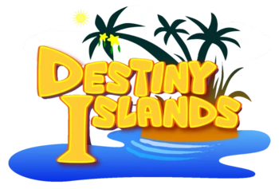

Destiny islands
Destiny Islands, named Destiny Island in Kingdom Hearts II, is a world from the Kingdom Hearts series. It is the home world of Sora, Riku, Master Xehanort, and Kairi (although Kairi is originally from Radiant Garden), three of the series's main characters. The world seems to be led by an unnamed mayor, who is mentioned as Kairi's foster parent.
Destiny Islands appears as a playable world only in Kingdom Hearts -A fragmentary passage-. However, the remains of the world reappear at the End of the World. A memory-based version of the world appears in Kingdom Hearts: Chain of Memories and Kingdom Hearts Re:Chain of Memories. In Kingdom Hearts coded and Kingdom Hearts Re:coded, a data version of the world appears as the second playable world. In other games the world is not playable and only appears in cutscenes.